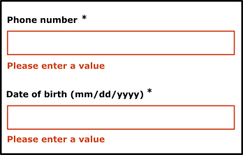

Orange web accessibility guidelines
Accessibility, a benefit for all, a need for some!
Web accessibility definition
An accessible web service can be used by anyone:
- A valid person,
- elderly people,
- people with disabilities (temporary or permanent).
and in all situations:
- with any kind of material: web browser, PC, MAC, mobile phones, tablet;
- in an unfavourable environment: poor luminosity, touchpad while moving, etc.;
- with specific software that compensates a disability.
Site organization
Essential criteria
List of the most important criteria according to your profile, based on a subset of the WCAG 2.0 level AA recommendations. A good way to be aware of the main criteria and commit progressively to accessibility.
Requirements list
This section is for developers. Everything you need to know to code accessible pages and to perform the tests to validate developments.
Methods and testing tools
For those who want to check the accessibility of their websites more or less automatically with tools. Finally, all the technical and methodological tools to review pages.
Open source Orange tools
Presentation of the Boosted library and the Comfort+ service.
Examples
Didactic examples for certain types of components or elements of the user interface particularly difficult to make accessible but frequently used. Everything is explained, just go ahead!
These examples use the Boosted library. It is based on Bootstrap and lets you create and quickly test the accessibility and responsiveness of a website. This library is branded with the Orange colours.
Essential criteria
This base criteria for the Orange websites and applications avoids the major accessibility errors. It is a subset of the accessibility requirements.
Its implementation does not give you the guarantee to be 100% accessible, but is a clean bedrock so you can engage in a progressive accessibility implementation process.
Following the Orange guidelines (Design for digital platforms Guidelines), available on the Orange brand site is a prerequisite to the use of this base criteria. Some elements already present in the Orange Brand (such as the use of colours, text alignment...) have not been included in this list of criteria.
Two versions are available:
- The first version does not mention the code, it is aimed at product designers, designers, project managers, etc.
- The second version mentions the code and is aimed at developers, technical managers, validation teams, testers, etc.


Essential criteria for the development
1. Set a title for each page
Target: everyone and especially people with visual disabilities.
When: as of conception and during development.
Description:
Give each page a title that is specific to it and which reflects its content or function (<title> tag).
The page title is the first element read by a screen reader, it must help to formally identify the page where you are.
Checklist:
- Even if there is no rule, in general (opening many tabs in multiple applications), we go from the most specific information to the least specific (e.g. title of the current page - name of the site). When opening a multitude of applications, the approach is different, in this case we will prefer going from the least specific information to the most specific (e.g. name of the site - title of the current page).
- When the content of the page is dynamic (displaying the result of a search, errors in a form, user adding content…), the title of the page should reflect this change.
Users’ goal:
Allow users to identify the topic of a page, find and get a clear idea of the content of the page without having to read it. In particular, it is the first element vocalized by a screen reader.
Do:<title>Home - Corporate web site of Orange</title>
Don’t:<title>Home</title>
Reference: WCAG 2.4.2
2. Give a title to headings
Target: everyone and especially people with cognitive limitations, reading difficulties and visual disabilities.
When: as of design, during content writing and development.
Description:
One must identify the heading tags (h1 to h6 HTML tags) used to structure the content of the pages.
Visually impaired people browsing with a screen reader can access the list of headings in the page to navigate quickly.
Just like in a Word document, it is possible to use the table of contents only if the heading tags have been properly set within the document.
Checklist:
- The headings must be relevant, reflect the structure of the information contained in the page.
- There must be no break in the heading hierarchy (we cannot jump from a
h2title to ah4title). - You can use several
h1headings per page (Don’t exceed two in most cases). - Hidden tags are dismissed by screen readers (
visibility: hidden;,display: none;oraria-hidden). - The dynamically-generated content must also meet this requirement.
Goal:
- For all users: improve the structure of the page and its contents.
- For search engines: improve SEO.
- For users with visual disabilities, cognitive limitations or reading difficulties: easy navigation and access to content.
Do:
Page with consistent and relevant headings:
(Heading 1) Home – Orange
(Heading 2) News
(Heading 2) Fibre broadband is coming!
(Heading 3) Check eligibility
Don’t: Page with a break in the heading hierarchy h2 → h4:
<h1>Home – Orange</h1>
<h2>News</h2>
<h2>Fiber broadband is coming!</h2>
<h4>Check eligibility</h4>
Tool :
HeadingsMaps extension, available for Chrome and Firefox, extract and display page titles for the current page.
Reference: WCAG 1.3.1
3. Provide enough contrast between text and background
Target: everyone, especially the mobile and tablet users, people with visual impairments, experiencing reading or attention difficulties and elderly people.
When: as of design and during development.
Description:
The contrast between the text and its background should be high enough.
Insufficient contrast level will have detrimental impact on users with visual difficulties and for mobile and tablets users in a very bright environment.
Don’t:
The label “film | 20h40…” does not have enough contrast. It will not be readable by all users.

Checklist:
- The contrast between the colour of the background and the text must be 4.5:1 minimum and also for text on an image carrying information.
- For applications used primarily in mobile web or in mobility, the contrast level of the main elements must be 7:1 in order to ensure a good readability for all.
- Links should be easily identifiable from to the rest of the text.
Users’ goal:
Ease of reading for all users, especially the visually impaired, or people in a very bright environment (outdoors).
Tool:
The Colour Contrast Analyser application can quickly measure colour contrast levels (free for Windows and Mac).
Reference: WCAG 1.4.3
4. Do not use colour or sensory characteristics as the unique source of information
Target: everyone, especially the colour-blind and more generally people with visual impairments, cognitive limitations, hearing impairments and elderly people.
When: as of design and during development.
Description:
Do not use colour or sensory characteristics (shape, size, sound, direction, visual localization …) as the only way of conveying information, indicating an action, requesting a response or distinguishing an element. The information provided by a colour change or a sensory characteristic must be completed with textual information (alternative) or / and semantic structuring.
Example:
For a pie chart, where each part is coloured differently, you could add different pattern fills to identify them without colour.
Do: 
Don’t:
This example is not valid because the information is conveyed only by colour.
Checklist:
- Take a screenshot and convert it in black and white. The loss of colour should not cause difficulty while navigating, nor cause loss of information.
- Turn off the speakers, the level of information should remain the same.
Users’ goal:
Allow users not distinguishing colours or sensory information (colour blind, visually impaired, hearing impaired, mobile users in bright environment or in noisy environments …) to access the same information by other means.
Reference: WCAG 1.4.1
5. Use lists
Target: everyone, and especially people with visual impairments and cognitive limitations.
When: as of design and during content writing.
Description:
Pages, if required, must contain semantically relevant lists. Add semantics to the HTML content using the following tags:
olfor ordered listsulfor unordered listslifor list items
Checklist:
- There must be no empty list.
- There must be no list with a single element (because this is not a list, unless this list is generated dynamically!).
Users’ goal:
Using lists allows users to identify, consolidate and sequentially display elements of the same kind.
Technical goal:
Requires coherent structuring of the content by the creator of the site.
Reference: WCAG 1.3.1
6. Decoupling content from interaction and presentation
Target: everyone, especially people with visual disabilities, reading or attention difficulties.
When: during development.
Description:
Strictly decouple the content (HTML), the interaction (Javascript) and presentation (CSS).
Checklist:
- Do not use tables to design the page layout, they should be used only for tabular data.
- Avoid using images to display text, prefer CSS styling.
- Use CSS classes rather than manipulating inline CSS styles in HTML.
- Do not use CSS pseudo-elements (::before, ::after…) to display information (or provide an alternative for screen readers especially).
- Do not write Javascript events directly inside the HTML, use a separate script or JS file instead.
Users’ goal:
Allow users, via their User Agent or technical assistance (e.g. their browser) to change the visual appearance of the page (zoom, colour, position…). For example, increase the text size without display problems.
Technical goal:
Improves maintainability.
Reference: WCAG 1.3.1, 1.4.5
7. Code validation
Target: everyone.
When: during and at the end of development.
Description:
Write code without parsing error.
Checklist
In the HTML code, ensure that:
- Elements must have opening and closing tags
- Elements can be nested according to their specifications
- Elements cannot contain duplicate attributes
- Each ID must be unique
Users’ goal:
The validation errors can prevent the user from accessing some content.
Technical goal:
- Ensure HTML interoperability and maintainability.
- Increase the compatibility with assistive technologies.
Reference: WCAG 4.1.1
Tool: HTML and CSS Validation Service
8. Declaring the main language and language changes
Target: everyone, particularly people with visual impairments.
When: during development.
Description:
Specify the primary language of the document with the attribute lang in the html tag.
Also specify the language of a content in a language other than the primary one, using the lang attribute in the HTML element containing the foreign language text.
Checklist:
For words or phrases in foreign language used as generic terms (Google, newsletter …) or proper names, do not indicate a change of language.
Users’ goal:
This attribute allows you to specify the language to the speech synthesis.
Technical goal:
Enable search engines to identify the language of a page to improve the natural referencing.
Example for a page in French:
- using HTML:
<html lang="fr"> - using XHTML:
<html xmlns="http://www.w3.org/1999/xhtml" xml:lang="fr" lang="fr">
Example of language change: découvrir Orange <span lang="en">live</span> TV
Reference: WCAG 3.1.1, 3.1.2
9. Associate a relevant label to form fields
Target: everyone and especially people with visual impairments, cognitive limitations, experiencing attention difficulties and mobile and tablet users.
When: during design and development.
Description:
Each form input must be associated with a label identifying the function of the field, the type of data and the expected format.
This label should be visually close to the field so we can easily link them (especially for people using zoom or software magnifier or even mobile users).
Each label must be set in a label tag, which is associated to the form field with afor attribute, using the id attribute of the form element.
In some cases, it seems unnecessary to associate a label to a form field (e.g. search field with a magnifying glass button next to it). In such case you can provide a hidden label (using accessible hiding), it will not be displayed on the screen but it will be associated with the form field programmatically so screen readers can vocalize it.
The title attribute set on a form element can also be used like a label. You can also use the aria-label and aria-labelledby, attributes preferably in this order.
Checklist:
For any form element, the label should be visually close to the field it identifies.
For radio and check box buttons, in addition to the label tag you can use other tags (title, aria-labelledby, aria-label or fieldset and legend). For required fields, this should be specified in the label using an image, a text symbol (* for example) or text and / or the aria-required property.
Users’ goal:
Not meeting this requirement is a blocking point for all users using speech synthesis. For mobile users and motor deficient it allows to click on the form elements more easily.
Do: 
Don’t: 
Example of an accessible form:
See the example of an accessible form for more details.
Reference: WCAG 3.3.2
10. Detect, identify errors and suggest corrections
Target: everyone and particularly people with visual impairments, cognitive limitations, reading or attention difficulties and elderly people.
When: as of design and during development.
Description:
The errors are automatically detected, the user is warned by a page title change, the error of the form field is clearly identified and the error is described with words to the user. If necessary, a correction is suggested.
Finally, the wording of the error messages should be explicit.
Checklist:
Identifying the invalid field, as well as displaying a suggestion of correction can be dynamically added to the label tag, but also to the title tag or aria-label and aria-labelledby tags depending on the needs.
Users’ goal:
Guide users when errors happen to improve the understanding and help them correct the errors, especially for internet beginners, elderly people and cognitively deficient.
Do: 
Don’t:

Example of an accessible form:
See the accessible form example for more details.
Reference: WCAG 3.3.1, 3.3.3
11. Set a text alternatives for images
Target: everyone and especially people with visual impairments and cognitive limitations.
When: from design and during development.
Description:
All img tags should have an alt attribute with a relevant description:
- For clickable images: specify the function / link target in the
altattribute, - For images carrying information: add an
altattribute describing the information contained in the image - For images containing text: add an
altattribute containing at least the text from the image, - For decorative images: add an empty
altattribute, - For images having
altattributes that won’t be convenient when the text is too long (diagrams, graphs…), add a describing text close to the image, or add a link pointing to an HTML page with the description.
Checklist:
Each img tag must have an alt attribute.
For images not carrying information, set them as background images preferably (CSS).
For graphs, you can add a link under them to access the data table (revealing it in the same page or in a different page).
Users’ goal:
Access the information included in images for users who cannot access it. Blocking point: an image without textual description is unusable by people with visual impairments or those that cannot display images (mobile, low bandwidth…).
Technical goal:
Improve the natural referencing.
Valid example:<a href="./home"><img src="logo_orange.jpg" alt="back to home"></a><img src="banner_bouquet_famille.png" alt="Good deal, family max plan 2 euros per month for 12 months instead of 16 euros.">
Example with an empty alternative:
In the example below, the right pictogram doesn’t have to be vocalized as the text on the left already provides the information.
In this case setting the alt attribute to something other than empty would provide redundant information.

<h3>guaranteed 24h service</h3><img src="service-24.png" alt="">
Note about CAPTCHA :
Captcha are often source of problems for users. If the implementation of an anti-spam system can not be avoided, it is desirable to move towards a more flexible solution for the user :
- Hidden input form left empty (honeypot technique), not visible to the user.
- Logical test (question whose answer is obvious, simple math test …).
- Double authentication.
If the presence of a captcha can not be avoided, it is essential to provide an audio alternative. Furthermore the alt attribute of the captcha image must be setted (eg alt = "CAPTCHA").
Reference: WCAG 1.1.1
12. Provide a transcript for any audio or video
Target: everyone and particularly people with visual disabilities, hearing impairments, cognitive limitations, or difficulties with French.
When: during design and development.
Description:
Provide for any audio or video carrying information, a complete transcript in the page itself or through a link next to it.
Checklist:
A full transcript is a transcript containing all the visual and hearing information that is relevant.
Users’ goal:
Provide access to visual and hearing information for people who cannot access it: visually impaired, blind, deaf, cognitively deficient, computer without speakers, noisy or bright environment.
Technical goal:
Allow audio and video referencing.
Reference: WCAG 1.2.3
13. Structuring data tables
Target: everyone, particularly people with visual disabilities.
When: as of design and during development.
Description:
For tabular data:
- Use the
tableelement withth(for table headers),td,trchildren elements. - Use the
scopeattribute withrow/colvalues to associate header cells and data cells. For complex tables, use theidandheadersattributes. - Use the
captiontag, ah1toh6tag just before the table or use a text near the table via anaria-labelledbyattribute in thetableelement to associate a title to the table. - Add the
summaryattribute to thetabletag to explain the structure in the case of a complex table. Keep in mind that this attribute is deprecated in HTML5, therefore it can be necessary to add thesummaryin the table title.
Checklist:
- Reminder: Do not use tables for page layout purposes.
- The caption (
caption) can be replaced by a section title (hx) located before the table.summary, meanwhile, is only needed for complex tables. - Prefer splitting a complex table into several simpler tables.
- Add a summary (
summaryattribute) in the table to explain the structure in the case of a complex table. - The
tbody,tfootandtheadtags have no influence on accessibility, hence, there is no obligation to use them.
Users’ goal:
Giving a summary and title for data tables allows everyone to know quickly its purpose without having to read it. For visually impaired users, binding cells to headers allows them to know where they are situated and understand the data in it.
Technical goal:
Improve natural referencing.
Reference: WCAG 1.3.1
14. Use relative size to allow changing text size
Target: everyone and especially people with visual impairments, using a device outdoors and elderly people.
When: during development.
Description:
Use relative length units for font size (em, rem, %) and for containers handling text size enlargement up to 200%.
Checklist:
- Do not use pixel (
px) for size that must adapt if we increase the text size. - Form fields must also have relative sizes to enlarge properly.
- Try to make the container adaptive so they can increase in size when the text is zoomed in.
- In Firefox, go to View > Zoom and check Zoom text only, set the zoom to 200%. Verify that there is no loss of information (disappearance or overlapping text).

Users’ goal:
Allow users (visually impaired, using a device outdoors, elderly people…) to increase the font size so they can access easily the information.
Example:
See the example handling zoom, increasing the text size for more details.
Reference: WCAG 1.4.4
15. Link and button labels must be understandable out of context
Target: everyone, especially people with visual impairments, cognitive limitations or attention difficulties.
When: as of design and during development.
Description:
Make the link and button labels understandable without the context for all users and, in particular, the visually impaired. During the navigation with a screen reader, it should be possible to access the links list of the page to navigate quickly. If your page contains several “learn more” links, it will be impossible to differentiate from each other.
If it is not possible to make a link more explicit (e.g. not enough space) but the label of the current link is sufficiently clear for people having access to the screen, the link label can have an extra hidden text or an aria-label or aria-labelledby attribute, specifically for screen reader users.
For example, in the image below, the two “next” links are not explicit enough for a person with visual impairments. However, when one sees the screen, the positioning makes obvious the function of each button.

In this case, add an accessible hidden content using span to complete the link label. This will not be displayed on the screen, but will be vocalized by assistive technologies.
Example:
<a href="…">next<span class="accessible-hidden-content"> to pay by installments</span></a>
<a href="…">next<span class="accessible-hidden-content"> to pay in one go</span></a>
Another solution is to use an aria-label or aria-labelledby attribute to clarify the link label.
In addition to these solutions, we could also use a title attribute to display a “confirm to pay in installments” tooltip when the mouse is over the link.
Checklist:
Ensure that links, out of context, give good information about the triggered action or destination. A page must not contain multiple links with the same label but pointing to different destinations / actions.
Users’ goal:
Allow users who don’t have access to the visual context to know the destination of the link. Particularly important for users navigating through a list of links extracted from the page (screen readers) or software magnifying glass users who see only a fraction of the page.
Technical goal:
Making explicit link labels improves natural referencing.
Do:
Associate a link labelled “click here” with a hidden label: “order you mobile phone”.
Don’t:
“Click here” or “Read more…” links without clarification.
Reference: WCAG 2.4.9
16. Preventing the user from opening a new window
Target: everyone, especially people with visual impairments, cognitive limitations or having attention difficulties.
When: as of design and during development.
Description:
Notify the user of any new window opening by mentioning it in the title of the link.
If it is not possible, use an icon (image with alt attribute) indicating the new window opening or just add a ‘new window’ in the label.
As a last resort, use an accessibly hidden text (off-screen).
Example:
Example of an icon that indicates the opening of a new window.
Checklist:
For any link opening a new window or a new tab, a mention like “(new window)” is shown in the link label, or a “(new window)” mention is positioned off the screen via CSS (accessible hidden content).
Users’ goal:
Avoid the unexpected opening of a window, because this can disturb, disrupt, or confuse the user. In particular for persons using mobile browsers, using speech synthesis or cognitively impaired.
Do:
For any external link and opening a new window, the label could be: “Go to the orange.com site (new window)”, for a picture-link the alt attribute could be: “consult the EULA (new window)”.
Reference: WCAG 3.2.2
17. Allow to use the main features of the application with the keyboard
Target: everyone, especially people with motor or visual impairment and using a device outdoors.
When: as of design and during development.
Description:
Implement event handlers that don’t rely on mouse events only.
Checklist:
All important actions performed with a mouse must also be reproduced with the keyboard, even complex interactions (drag & drop, mobile touch gestures…).
Users’ goal:
Allow users who cannot use the mouse (blind, motor disabled, mobile web, outdoor…) to access the main features of the application with the keyboard.
Do:
- A sub-menu displayed when the mouse is over an element must also be displayed when the parent menu item receives the keyboard focus.
- In a webmail, right-clicking on the “trash” icon opens a menu to empty the trash, this option should be also available from an “empty the trash” button elsewhere in the interface or from a drop-down menu accessible with the keyboard.
Don’t:
A functionality only available through drag & drop and without any keyboard equivalent.
Reference: WCAG 2.1.1
18. The focus order must be sequential and logical without keyboard trap
Target: everyone, especially people with motor or visual impairments and using a device outdoors.
When: during development.
Description:
Elements (links, buttons, form fields) must receive the focus in a logical order for the user, without being trapped or blocked, even for dynamically-generated content appearing or disappearing (changing the DOM, Ajax,…).
Checklist:
- To validate this requirement, the focus position must be visible at all times (
outlineand:focusCSS properties), see requirement 19 below. - Be careful of the order of elements in the HTML code, it affects the focus order. An element at the end of the source code, but positioned at the top of the page via CSS will be the last to receive focus.
- For maintainability, avoid using the
tabindexattribute with values higher than 0.
Users’ goal:
Allowing logical navigation without “trapping” the keyboard in the pages of the application. Necessary for users navigating with the keyboard (visually impaired, motor impaired, cognitive impaired, using a device outdoors).
Don’t:
A page containing a video player where the focus can enter inside the player, but cannot get out (keyboard trap).
Reference: WCAG 2.4.3, 2.1.2
19. Make the focus visible at all times
Target: everyone and especially people with visual impairments, cognitive limitations, motor disabled, having attention difficulties or using a device outdoors.
When: as of design and during development.
Description:
Do not hide the focus and if necessary make it visible enough (e.g. by modifying the outline CSS property) on all elements likely to receive it (links, buttons, form elements). You can also accentuate the visibility of the focus so that it is easily identifiable.
When an effect is visible on an element during mouse-over (e.g. :hover CSS property), this effect must also be displayed when capturing the focus (:focus).
Checklist:
In many front-end frameworks or CSS resets, the outline property (to visualize the focus) is disabled (outline: none;), don’t forget to redefine it and check that the focus is visible on all focusable elements.
Users’ goal:
Allow focus visibility on all elements, especially for keyboard users (visually impaired, motor disabled or those with attention or memory difficulties and using devices outdoors).
Do:
Focus set on the « Apple iPhone 5s argent » link, clearly visible.

Don’t:
Focus set on the « Apple iPhone 5s argent ».

Reference: WCAG 2.4.7
20. Provide skip links
Target: useful for mobile and tablet users, people with visual impairments, motor disabilities or using a device outdoors.
When: as of design and during development.
Description:
Provide skip links allowing to access directly the main page areas (navigation, content, bottom of the page, search…) with internal links pointing to anchors. (<a> tags or any HTML element with an id attribute). In very specific cases, the links can be hidden on the screen and appear only when keyboard navigation is detected.
Checklist: When a skip link is activated, make sure the focus is correctly set (not only scrolled to the right position).
Users’ goal:
Facilitate the navigation for users using a keyboard, visually impaired, users of magnifying glass software or mobile phone.
Example:
Skip links (“Skip to navigation”, “Skip to content”) are available on this site.
To make them appear, move the focus on the top of the page by clicking on your browser’s address bar, for example, then repeatedly press the TAB key.

Reference: WCAG 2.4.1
21. Animation
Target: people with visual impairments, reading, attention or understanding difficulties, people with seizure disorders.
When: when designing the service and graphic design.
Description:
All moving, refreshed or flashing content must provide a way to be stopped, paused or hidden by the user.
Also, avoid as much as possible flashing content and sudden brightness changes (see The logo of the Olympics causes seizures).
Therefore, it is necessary to pause the animation when loading the page or to give a way to stop or pause the animation, the update or the flashing via a button for example.
Example: 
A carousel that automatically scrolls must be paused when the mouse is over it or when it receives the focus.
It is also possible to add a “pause” button directly in the interface.
Reference: WCAG 2.2.2
22. Make sure the main features can be used with screen readers
Target: everyone, especially people with visual impairments.
When: during development.
Description:
Follow general recommendations for accessibility, use primarily the HTML standard components, otherwise, use the ARIA (Accessible Rich Internet Applications) interface for complex components.
Checklist:
Ensure there is no blocking point with a browser/screen reader combination (Firefox/NVDA, IE/Jaws, Safari/VoiceOver) when a user navigates (accessing the main features of the application). Indeed, screen reader users are the most affected by the lack of accessibility, we can identify a huge amount of problems in satisfying this requirement.
Users’ goal:
Allow the screen reader users to access the main features of the application, but also ensure the usability of the application for all users.
23. Keep a logical tab order on dynamic insertion or modification
Target: everyone, especially people with visual disabilities, cognitive limitations, or attention difficulties.
When: during development.
Description:
When an element is displayed after a user interaction:
- it must appear in the source code right after the triggering element (e.g. drop down menu),
- or the focus must be set on one of the first elements of the generated content (link, button, title, paragraph…).
When the content disappears, the focus must be restored to the triggering element. For example, when closing a dialogue, the focus must be moved to the element that triggered the popup opening (button, link…).
Reminder: dynamically-generated content must be accessible and therefore respect all accessibility criteria. There are several solutions to warn the user in case of appearing/disappearing of content:
- via text,
- moving the focus,
- using ARIA.
See the drop down menu example for the aria-haspopup attribute implementation.
Checklist:
- The focus moves in a logical way (natural reading order).
- The focus order must not be defined using the
tabindexattribute (with positive values).
In practice, tabindex should be used with only two attribute values:
tabindex="-1": prevents an element from being focusable via the TAB key and allows it to be focusable via Javascript.tabindex="0": makes an element focusable via the TAB key and via Javascript.
Users’ goal:
Allow a user, for example a blind or visually impaired user, to detect and interact with new appearing content.
Reference: WCAG 2.4.3
24. Ensure the user keeps control during interactions
Target: everyone, especially people with visual impairments, cognitive limitations or attention difficulties.
When: as of design and during development.
Description:
Do not introduce confusion when setting the focus on an element, entering data, on an unpredictable form field activation or without notifying the user.
Users’ goal:
Allow all users to maintain control over any change of context after an action.
Example:
A form must have a submit button. It should not be sent automatically after the user input.
Reference: WCAG 3.2.1, 3.2.2
Essential criteria for the design
1. Set a title for each page
Target: everyone and especially people with visual impairments.
When: as of design and during development.
Description:
Give each page a title that is specific to it and which reflects its content or function (<title> tag).
The page title is the first element read by a screen reader, it must help to formally identify the page where you are.
Checklist:
- Even if there is no rule, in general (opening many tabs in multiple applications), we go from the most specific information to the least specific (e.g. title of the current page - name of the site). When opening a multitude of applications, the approach is different, in this case we will prefer going from the least specific information to the most specific (eg name of the site - title of the current page).
- When the content of the page is dynamic (displaying the result of a search, errors in a form, user adding content…), the title of the page should reflect this change.
Do:Home - Corporate web site of Orange
Don’t:Home
2. Start sections with headings
Target: everyone and especially people with cognitive limitations, reading difficulties and visual impairments.
When: as of design, content writing and during development.
Description:
Identifying heading tags (h1 to h6 HTML tags) used to structure the content of the pages.
Visually impaired people browsing with a screen reader can access the list of headings in the page to navigate quickly.
Just like in a Word document, it is possible to use the table of contents only if the heading tags have been properly set within the document.
Checklist:
- The headings must be relevant, reflect the structure of the information contained in the page.
- There should be no break in the heading hierarchy (we cannot jump from a
h2heading to ah4heading). - You can use several
h1headings per page (Don’t exceed two in most cases).
Goal:
- For all users: improve the structure of the page and its contents.
- For search engines: improve SEO.
- For users that are visually impaired, cognitively impaired or having reading difficulties: easy navigation and access to content.
Do:
Page with consistent and relevant headings:
(Heading 1) Home – Orange
(Heading 2) News
(Heading 2) Fibre broadband is coming!
(Heading 3) Check eligibility
3. Make sure there is enough contrast between text and background
Target: everyone, especially mobile and tablet users, people with visual impairments, reading or attention difficulties and elderly people.
When: as of design and during development.
Description:
The contrast between the text and the background should be high enough.
Insufficient contrast level will have detrimental impact on users with visual difficulties and for mobile and tablet users in a very bright environment.
Don’t:
The label “film | 20h40…” does not have enough contrast. It will not be readable by all users.
Checklist:
- The contrast between the colour of the background and the text must be 4.5:1 minimum and also for text on an image carrying information.
- For applications used primarily in mobile web or in mobility, the contrast level of the main elements must be 7:1 in order to ensure a good readability for all.
- Links should be easily identifiable from to the rest of the text.
Tool:
The Colour Contrast Analyser application can quickly measure colour contrast levels (free for Windows and Mac).
4. Do not use colour or sensory characteristics as the unique source of information
Target: everyone, especially the colour-blind and more generally people with visual impairments, cognitive limitations, hearing impairments and elderly people.
When: as of design and during development.
Description:
Do not use colour or sensory characteristics (shape, size, sound, direction, visual localization…) as the only way of conveying information, indicating an action, requesting a response or distinguishing an element. The information provided by a colour change or a sensory characteristic must be completed with textual information (alternative) or / and semantic structuring.
Do:
Don’t:
This example is not valid because the information is conveyed only by colour.
Checklist:
- Take a screenshot and convert it in black and white. The loss of colour should not cause difficulty while navigating, nor cause loss of information.
- Turn off the speakers, the level of information should remain the same.
5. Define text alternatives
Target: people with visual impairments, hearing difficulties or cognitive limitations and search engines.
When: as of design and during development.
Description:
Set text alternatives on all non-text informative elements (alternatives to images, icons). Also provide scripts or subtitles for the audio or video content.
Example
In the screenshot below, the design phase should provide text alternatives for each button:
- “menu”,
- “settings”,
- “previous channel”,
- “mute”…

Note about CAPTCHA :
Captcha are often a source of problems for users. If the implementation of an anti-spam system can not be avoided, it is desirable to move towards a more flexible solution for the user:
- Hidden input form left empty (honeypot technique), not visible to the user.
- Logical test (question whose answer is obvious, simple math test …).
- Double authentication.
If the presence of a captcha can not be avoided, it is essential to provide an audio alternative.
6. Focus visibility
Target: everyone and especially people with visual impairments or cognitive limitations, motor disabilities and using a device outdoors.
When: as of graphic design and during development.
Description:
The position of the keyboard focus must be visible at all times. When a clickable element receives the focus (link, button…), this must be visible to the user. By default, the browser sets a dotted or a coloured box around the element. This behaviour can be replaced by a custom effect (improving the contrast, for example) but must not be deleted. Users who navigate using the keyboard (TAB) need to know the position of the focus.
The focus indicator as well as the hover indicator (when the mouse is over an element) should be carefully considered since the graphic design.
Do:
In the following screenshots, the focus is located on the “209 SMS / month”.
The first figure shows the default behaviour (focus represented by a dotted box).
In the second capture, the dotted lines have been removed, replaced by a coloured box to explicitly indicate the location of the focus.

7. Changing text size
Target: everyone and especially people with visual impairments, using a device outdoors, and elderly people.
Who: as of graphic design and mainly during development.
Description:
The text size should be able to be doubled (set the zoom to 200% in the browser settings). At this zoom level, the page layout can be altered, but the information must be readable (text or bunk not truncated).
Although this must be taken into account during the development phase, we can identify, even still in the graphic design phase, areas of the screen that should or should not grow together with the text size. Moreover, some design choices may or may not facilitate the implementation of this criterion during development, so it is important to think about it from the start.
Example:
The screenshot below shows a page with the zoom set to 100%.
Do:
Zoom set to 200%.
Don’t:
Zoom set to 200%. In this case the height of the text container did not resized according to text size.
8. Animation
Target: people with visual impairments, reading/attention/understanding difficulties and seizure disorders.
When: when designing the service and during graphic design.
Description:
All moving, refreshed or flashing content must provide a way to be stopped, paused or hidden by the user.
Also, avoid as much as possible flashing content and sudden brightness changes (see The logo of the Olympics causes seizures).
Example:
A carousel that automatically scrolls must be paused when the mouse is over it or when it receives the focus. It is also possible to add a “pause” button directly in the interface.
9. Link labels
Target: everyone and especially people with visual impairments, cognitive limitations or attention difficulties.
When: when designing the service and during graphic design.
Description:
The wording of the links should be explicit enough.
In exceptional cases when it is technically impossible, provide a proper label so a screen reader can use it.
Do:Learn about our offers
Don’t:click heremore details
10. Navigating with the keyboard
Target: everyone, especially people with motor or visual impairments or using a device outdoors.
When: when designing the service and during development.
Description:
All features must be accessible using the keyboard. Pressing the keyboard Tab key, the browser passes the focus between clickable elements.
Moreover, if the features are mouse-specific (drag and drop, right click menu…), ensure that these are also available through other means elsewhere in the interface (button, icon, menu…).
Example:
In the webmail, right-clicking on the “trash” opens a menu to empty the trash, this option should be also available through an “empty the trash” button elsewhere in the interface or from a drop-down menu accessible with the keyboard.
11. Forms
Target: everyone and especially people with visual impairments.
When: during design and development.
Description:
Each form input must be associated with a label identifying the function of the field, the type of data and the expected format. This label should be visually close to the field so we can easily link them (especially for people using zoom or a software magnifier, or even for mobile users). Error messages should clearly identify the invalid field, and if necessary suggest a correction. This applies to input fields, but also to other types of fields (drop-down list, radio button, checkbox…). From the development perspective, this label must be associated with the form field to facilitate the navigation with a screen reader.
Do:
Don’t:
In some cases, it seems unnecessary to associate a label to a form field (search field accompanied by a magnifying glass button for example). In such case you can provide a hidden label, it will not be displayed on the screen but it will be associated with the form field programmatically for easy navigation with a screen reader.
Lastly, the wording of the error messages should be explicit.
Do:
Don’t:
12. Dialogues and opening new windows
Target: elderly people, people with cognitive or visual impairments or using a device outdoors.
When: as ofdesign and in the development.
Description:
Avoid as much as possible the actions that open a new window (or tab) of the browser. If a link triggers the opening of a new window, you need to ensure that the text “new window” is vocalized by screen readers programmatically. So that visually impaired people know that a new window has been opened.
Also avoid the systematic use of dialogues to display information in the pages (presentation of service…). They often cause accessibility problems for people who navigate with a keyboard or a screen reader, and they will require special attention during the development phase.
Don’t:
In the example below the use of a dialogue is not justified. Using a standard web page would:
- allow more space to the content (by removing the margins around the dialogue),
- allow the “back” button to go back when navigating between pages of the dialogue,
- make the display on small screens easier,
- avoid accessibility problems for people who navigate using the keyboard or using a screen reader,
- reduce the weight of the page and improve loading time, as in this example the page behind the dialogue box must be charged.

13. Provide skip links
Target: useful for mobile and tablet users, people with visual impairments, motor disabilities or using a device outdoors.
When: as of the design phase and in the development.
Description:
Provide skip links such as “Skip to content” on each page. It facilitates navigation for people using the keyboard, using a device outdoors or with a screen reader. In very specific cases, the links can be hidden on the screen and appear only when keyboard navigation is detected.
Example:
Skip links (“Skip to navigation”, “Skip to content”) are available on this site.
To make them appear, move the focus on the top of the page by clicking on your browser’s address bar, for example, then repeatedly press the TAB key.
Orange web accessibility requirements
WCAG
For Orange internal accessibility requirements, we have chosen to rely on the Web Content Accessibility Guidelines v2 (WCAG 2). Those guidelines are international guidelines published by the World Wide Web Consortium (W3C) Web Accessibility Initiative (WAI) task force, which comply with the ISO standard 40500:2012.
All HTML pages made by the Orange group must comply with the AA level criteria of Web Content Accessibility Guidelines (WCAG) 2.0, without blocking point for the user after testing the main features of the site or application.
For technical solutions, you should consult essential criteria and examples sections. You can also refer to an external resource available at Accede-Web references.
RGAA
The RGAA is the French government’s General Accessibility Reference for Administrations (in French). It is meant to provide a way to check compliance against WCAG 2.0. If your are familiar with this reference, you can use it to test your site.
An English translation is available for informational purposes only.
Accede-web references
The Accede-web site offers great manuals on web accessibility. These references are very useful, pedagogical and come from Atalan, a group of major companies as well as schools and associations of people with disabilities:


HTML5 & ARIA
Introduction
Web sites are increasingly dynamic (asynchronous loading, dynamic content generation) and interactive (rich interface components: slider, datepicker…). So it is very difficult or impossible to make these components accessible with conventional HTML.
Even with the HTML5 change, we still lack semantics to provide technical aids (screen readers, magnifiying software, …), keyboard navigation is often impossible, complex handling of the keyboard focus is missing and live regions are not notified to the user.
What is it ?
To overcome these limitations, the W3C / WAI has officially issued a recommendation called ARIA, standing for Accessible Rich Internet Applications, and several documents on the use of ARIA.
ARIA is a semantic wrapper based on the attribute / value combination used in markup languages such as HTML, SVG, XML, etc. This recommendation consists of roles, states and properties that will specifically interact with assistive technologies (AT). With ARIA, one can describe elements and behaviours with simple HTML when they do not exist natively, for example tabs, drop-downs, live regions, tooltips, modal windows, etc. ARIA also defines how an interface component has to behave with the keyboard in order to standardize the user experience with keyboard navigation. ARIA makes sense and delivers its full potential when used with HTML5.
ARIA does not add any particular behaviour or any style to UI components as it is only descriptive. So always make sure presentation is done through CSS, content control and interaction via Javascript.
Support
ARIA support improves quickly and is already supported :
- in modern browsers (Firefox >=3.0, Chrome >=16, Safari >=4, Opera 9.5>=, Internet Explorer 8 for a basic support, Internet Explorer >=9 and Edge for advanced support);
- in assistive technologies (NVDA >=2010, Orca >=2 + Firefox only, VoiceOver OSX >=10.5, iOS >=4, JAWS >=8, Window-Eyes >=7, ZoomText 10 for a basic support, ZoomText >=11 for advanced support).
Moreover, the optimal efficiency of the ARIA compatibility depends heavily on the browser/assistive technology combination: Firefox with NVDA, Jaws with Internet Explorer or Safari with VoiceOver, for example.
Should we use it?
ARIA improves the accessibility of components that are not natively available in HTML (or inaccessible HTML5 components). ARIA’s robustness and interoperability is rather complacent, twenty WCAG 2.0 techniques are specific to ARIA (10 are HTML5 techniques). Therefore, for rich Internet applications, ARIA is essential for accessibility implementation.
In all cases, you have to test developments in the target environments (browser/assistive technology combinations). This is a tough task, but absolutely necessary for complex cases because on a web site or a traditional web application, you must, at least, test with Safari/VoiceOver, Internet Explorer/Jaws and Firefox/NVDA.
In a well-defined environment (e.g. intranet), target environments are known and in a finite number, so it gets easier!
Webography
- W3C:
- Introduction to ARIA
- ARIA specification
- ARIA implementation (be careful as it’s a “working draft”)
- Use ARIA HTML (5) (be careful as it’s a “working draft”)
- ARIA techniques in WCAG 2
- Introduction to ARIA by Site Point
- Introduction and link list to ARIA sources
Methods and testing tools
You will find here articles describing useful methods and tools to test the accessibility of your web pages.
Manual test and assistive technology
Keyboard navigation List of the main shortcuts to navigate with the keyboard in a web page.
Text size enlargement Zoom guide.
Navigating with a screen reader The screen readers commonly used.
Automated testing tools
Browser extensions Some extensions that allow you to perform automated tests on a page.
Test criteria
Measure the colour contrast level Introducing the Colour Contrast Analyser tool.
Accessing page headers (H1 to H6 tags)
Different ways to access the list of page headers.
Orange Open source tools
Here is our list of open source tools for the web:
- Orange Boosted: allows you to create accessible web sites branded with Orange colours.
- Orange Comfort+: allows you to improve user comfort while browsing your website.
Orange Boosted
Presentation
Orange Boosted is an HTML, CSS and Javascript framework based on the popular framework Bootstrap. It allows to quickly create a responsive and accessible website branded with the Orange colours.
Why you should use it?
- Based on Bootstrap
- Orange branded
- Enhanced with more accessible components
- Enriched with specific components we use at Orange
- Example pages
- Open source, MIT license
Official site
Orange Confort+
Presentation
The Orange Comfort+ service can adapt the layout of a website to improve comfort during the navigation. It has a wide range of settings that can improve the comfort of all users. It also provides valuable assistance to users with motor, visual or cognitive disabilities.
You can test the service by clicking on the “Comfort+” button at the top right of this page.
Its main features:
- Useful for all users
- Supports different user disabilities
- Works with all websites
- Also available as a browser extension
- Open source, MIT license

Browser Extensions
Official website
Measure the colour contrast level
The contrast level can be measured simply by using the Colour Contrast Analyser tool.
This tool is available for Mac and Windows. It measures the contrast between two colours (text colour and background colour). You can select them using an eyedropper directly into a web page, image or application.

Keyboard navigation
Navigation in a web page should be possible using only the keyboard, particularly for people who cannot use a mouse. This feature is supported directly by the browser. It is important to verify it is operating correctly, as some developments can lead to difficulties to properly navigate the page.
To test if your service is accessible using the keyboard, you can try to navigate without your mouse. All available features must be accessible.
Reminder: the focus must be visible enough on all focusable elements.
List of keyboard shortcuts:
- The Tab key: to move the focus.
- The shift + Tab keys: to move backwards the focus.
- The Return key to activate the element that has the focus (link, button, menu…).
- The Spacebar to check / uncheck a checkbox.
- The arrow keys to change the selection of the radio buttons, to move in a drop-down list, or to scroll (scrollbar) when available.
Note: on Mac, keyboard navigation must be enabled first:
In Safari: Edit > Preferences… > Advanced
Then check the box “Press tab to highlight each item on a webpage”.
Accessing page headers (H1 to H6 tags)
To check if the headers have been properly positioned on the page, there are several solutions:
- Browse the page code source by hand.
- Use an extension such as HeadingsMap for Firefox, WAVE for Chrome or Web Developer Toolbar.
- Access the headers list from a screen reader (see the screen reader section).
The last solution is the most reliable, because extensions do not always take into account the CSS and any ARIA attributes positioned on the HTML tags. You can find more information in this article: Navigation with a screen reader.
Navigating with a screen reader
A screen reader is a voice synthesis software used by the visually impaired and the blind. It allows the user to interact with the computer and listen to what is displayed as text (usually) on the screen. There are several screen readers, the most prevalent are:
- NVDA: free, available for Windows.
- Jaws: commercial, available for Windows. In trial mode, you can only use it for 40 minutes, but if you restart your computer you can use it again.
- VoiceOver: free, available for Mac. It is directly integrated into the MacOS system.
Getting started with NVDA
NVDA is a free screen reader available for Windows.
Installation
Download the NVDA installer on the official website.
The default voice is not very good but it is very reactive. It is not mandatory, but you can download extra voices. Then just go to preferences to change NVDA voice settings.
Configuration
At first startup, NVDA is configured to vocalize whatever the mouse pointer is over. This mode is used by visually-impaired people who have difficulties reading the text displayed on the screen, for example. It is recommended to disable this option if you use NVDA to test accessibility on your pages. To disable this navigation mode, right-click on the NVDA icon located in the notification area. Then go to Preferences > Mouse settings and uncheck “Enable mouse tracking”.
Finally, it is advisable to change the default playback mode. On a webpage use the following keyboard shortcut Ins + v to disable the “screen layout is preserved” option and then save this configuration as default using the shortcut Ins + Ctrl + c.
Navigating web pages
The main useful shortcuts to test navigation in a web page using NVDA are:
- Up and down keys to go to the next or the prior line.
- Left and right keys to move forward or backward one character
- Ctrl + Home to move to the top of the page.
- Ctrl + End to move to the bottom of the page.
- Ins + F7 to display the heading list and the link list.
- Ctrl to mute NVDA.
- Ins + T to read the page title.
- H and shift + H to jump to the next title or the previous title (
H1toH6title tags). - B and shift + B to move through buttons.
- C and shift + C to move through drop down lists (Combobox).
- D and shift + D to move through ARIA landmarks.
- E and shift + E to move through text fields.
- F and shift + F to move through forms.
- G and shift + G to move through images (Graphics).
- I and shift + I to move through HTML list items.
- K and shift + K to move through links.
- L and shift + L to move through HTML lists.
- M and shift + M to move through frames and iframes.
- O and shift + O to move through embedded objects (flash). Press Ins + Space to start interaction. Esc to finish interaction.
- Q and shift + Q to move through quotes (blockquote).
- R and shift + R to move through radio buttons.
- T and shift + T to move through tables.
- X and shift + X to move through checkboxes.
- Spacebar to check or uncheck a checkbox.
- Ins + shift + S allows to pause NVDA only in the current application.
- Ins + Q to exit NVDA.
Also note that NVDA has a speech viewer (Tools > Speech viewer), it displays everything that is vocalized.
Getting Started with Jaws
Jaws is a commercial and very famous screen reader, available for Windows. It is used primarily with Internet Explorer. In trial, you can only use it 40 min, but if you restart your computer you can use it again.
Installation
You can download Jaws directly from the Freedom Scientific site.
Navigating web pages
The most useful shortcuts to test navigation in a Web page with JAWS:
- Up and down keys to go to the next or the prior line.
- Ins + T to read the page title.
- Ins + F5 to display the form fields list.
- Ins + F6 to display header list.
- Ins + F7 to display link list.
- Spacebar to check or uncheck a checkbox.
- Ctrl to mute Jaws.
Getting Started with VoiceOver
VoiceOver screen reader is only available on Mac. It requires no installation since it is integrated directly into the system. You can activate VoiceOver from System Preferences > Accessibility. Or directly using the shortcut Command + F5.
Navigating web pages
When launching VoiceOver, it displays an interactive guide to learn the key shortcuts. You should have a look at it. But here are the main shortcuts:
- Ctrl + Option + Right and Ctrl + Option + Left to go to the next or the prior line.
- Ctrl + Option + U to access the header, link, form field lists... (use the left and right arrows to navigate between lists).
- Ctrl to mute VoiceOver.
- Ctrl + Option [Uh-oh, something is missing here, we’ll come back to it, sorry.]
Browser extensions
Some extensions allow you to perform automated tests on the current page.
aXe accessibility audit
aXe is an extension available for Chrome and Firefox to perform several tests based on the WCAG.

WAVE Toolbar
WAVE Toolbar is a toolbar extension for Chrome. It allows to perform several tests on the current page just like aXe. Unlike aXe, which shows errors in a tab of Web Inspector, here the errors are displayed directly on the page. A bookmarklet (or favelet) for WAVE is also available.

Text size enlargement
How to test?
One of the accessibility requirements is being able to enlarge the text up to 200% —only the text size, not the entire page. Actually when you use the browser default zoom it enlarges the entire page adding vertical and horizontal scrollbars. For example, reading a blog could be very tedious because you would have to scroll all the time to access the content.
Increasing only the text size does not necessarily add a horizontal scrollbar. You must verify that at this zoom level (200%), the text remains readable. No text must be truncated or superposed. Information must be accessible even if the presentation can be somewhat altered.
To enlarge only the text size, tick the “Zoom Text Only” option in Firefox. To enlarge the text by 200% press Ctrl + four times.

What implications for development?
If your page is not displayed correctly when you enlarge the text, it might be because you use the pixel as length unit for text size and container size (height or width of a div...).
To fix display issues when the zoom is set to 200%, it is not necessary to remove all pixels units from all your code but correct only the unreadable content (replacing px by %, em or rem).
Example with 100% zoom
Example with 200% zoom and using pixel as length unit
The height of the elements is not based on the size of the text, they do not expand.
Example with 200% zoom and using relative length units(rem)
The height of the elements containing the text has been set with a relative unit which varies depending on the text size (rem). The elements become larger, the text remains readable.
More information in the examples section: handling zoom, increasing the text size.
Examples
The basics


Intermediate level
-
 Dialog box 1/2
Dialog box 1/2
-
 Dialog box 2/2
Dialog box 2/2
-
 Dropdown menu
Dropdown menu
-
 Make a screen reader speak using Javascript
Make a screen reader speak using Javascript
-
 Create accessible “tags” 1/2
Create accessible “tags” 1/2
-
Create accessible “tags” 2/2 (examples)
Advanced level
-
 ARIA lists (listbox) 1/3
ARIA lists (listbox) 1/3
-
 ARIA lists (listbox) 2/3 (with checkboxes)
ARIA lists (listbox) 2/3 (with checkboxes)
-
 The listbox and ARIA patterns 3/3 (keyboard navigation)
The listbox and ARIA patterns 3/3 (keyboard navigation)
-
 File Explorer (cloud)
File Explorer (cloud)
-
 Live regions, dynamic content, handling focus and ARIA
Live regions, dynamic content, handling focus and ARIA
Your opinion matters ...
Have a bug or a feature request?
Please first check the issues and search for existing and closed issues. If your problem or idea is not addressed yet, please open a new issue.
About
Documentation under the CC BY SA 3.0 license, source code of this site and examples are available on github.
The Orange logo and some images or screenshots are the property of Orange:
Copyright (C) 2016 Orange SA All rights reserved
List of the concerned files